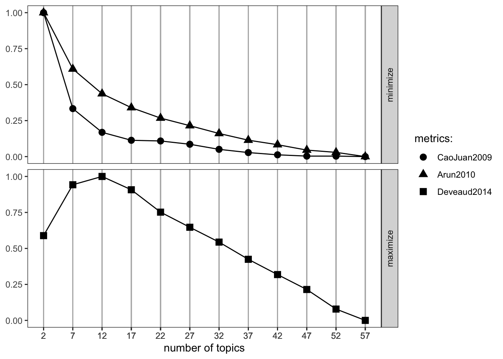

Warning: One or more parsing issues, call `problems()` on your data frame for details,
e.g.:
dat <- vroom(...)
problems(dat)
Rows: 1603 Columns: 46
── Column specification ────────────────────────────────────────────────────────
Delimiter: ","
chr (30): Authors, Author full names, Author(s) ID, Title, Source title, Iss...
dbl (4): Year, Volume, Page count, Cited by
lgl (12): Molecular Sequence Numbers, Chemicals/CAS, Tradenames, Manufacture...
ℹ Use `spec()` to retrieve the full column specification for this data.
ℹ Specify the column types or set `show_col_types = FALSE` to quiet this message.
Before creating the model we need to prepare the text. This means removing punctuation, weird characters or even words that we don’t want to find in our topics simply because they don’t have any informational value.
We build a function that prepares the text. It removed punctuation, removes stopwords and the words we don’t want, stems the text etc. This function can be adapted and extended to your need by adding lemmatization for example.
library(tm)clean_text <-function(text){ text =removePunctuation(text) # optional text <-tolower(text) # remove caps# we can use the gsub funciton to substite specific patterns in the text with something else. Or remove them by replacing them with "". text <-gsub("\\.", "", text) text <-removeWords(text, my_dico) # Remove the terms from our own dictionary text <-stemDocument(text) # stem the terms text <-removeWords(text, stopwords(kind <-"en")) # remove stopwords (in english) text <-trimws(text) # remove any weird spaces in the text}
Now that we have the text prepared, we need to create a document-term matrix for the topic modelling function. The document-term matrix specifies for each document which terms are contained within it. We use the DocumentTermMatrix() function from the tm package. This function has one argument which is a dataframe with the text of the corpus.
# create the document-Term-matrixdtm <-DocumentTermMatrix(entr_eco_publications)
Find the number of topics
Based on this matrix we will now try to define how many topics we need to extract. For this we use the FindTopicsNumber and FindTopicsNumber_plot from the ldatuning package.
The FindTopicsNumber functions takes several arguments. The first is directly the document term matrix. We also need to specify which number of topics we want to try. The seq() function creates a vector which starts at the from arguments, stops at the to argument. The size of the steps is set by the by argument. If we want to check for a number of topics between 2 and 60 with steps of 5 (2, 7, 13, 18, …) we would write seq(from = 2, to = 60, by = 5).
We then specify the metrics we want to compute, we have discussed these in the lecture.
Warning
For an unknown reason, the “Griffiths2004” function does not work on mac OSX. It should work for windows users.
The mc.cores option specifies on how many cores you want the algorithm to run, this depends on your laptop, adjust to suit your needs. The verbose argument defines whether or not you want the algorithm to provide some information on which stage it is working. This will reduce the anxiety of not knowing whether the algorithm is stuck, still running or finished.
topic_num <-FindTopicsNumber( dtm,topics =seq(from =2, to =60, by =5),metrics =c("CaoJuan2009", "Arun2010", "Deveaud2014"),mc.cores =8L,verbose =TRUE)
Warning: The `<scale>` argument of `guides()` cannot be `FALSE`. Use "none" instead as
of ggplot2 3.3.4.
ℹ The deprecated feature was likely used in the ldatuning package.
Please report the issue at <https://github.com/nikita-moor/ldatuning/issues>.

Run the model
Now that we have an idea of how many topics we need, let’s extract the topics. We will use the LDA function from the topicmodels package, and specify K as the number of topics. Here we can pick 12~17 based on the previous plot.
# perform topic modellingk =17topic_model_results <-LDA(dtm, k = k, method="Gibbs", control =list(seed =42, alpha=50/k, nstart =1, keep =1, burnin =1000, iter =1000, verbose =FALSE))
Visualize the results
topic_model_results contains the results of the topic modelling process, in other words it contains the probabilities that a word is part of a topic and a topic is part of a document. We can visualise this information by plotting the betas (probability that a word is part of a topic).
# get the betasbetas <-tidy(topic_model_results, matrix ="beta")# subset the betas for resultsap_top_terms <- betas %>%group_by(topic) %>%slice_max(beta, n =10) %>%ungroup() %>%arrange(topic, -beta)library(ggplot2)ap_top_terms %>%mutate(term =reorder_within(term, beta, topic)) %>%ggplot(aes(beta, term, fill =factor(topic))) +geom_col(show.legend =FALSE) +facet_wrap(~ topic, scales ="free") +scale_y_reordered()
This plot shows the top 10 words for each topic. This means that it shows the 10 words with the highest probability to be part of the topic. The values under each barplot represent the betas.
Create an interactive visualisation
# Extract the necessary components for LDAvislda_topics <-posterior(topic_model_results)$topicslda_terms <-posterior(topic_model_results)$termsterm_frequency <-colSums(as.matrix(dtm))doc_length <-rowSums(as.matrix(dtm))# Create the JSON object for visualizationjson_lda <-createJSON(phi = lda_terms,theta = lda_topics,doc.length = doc_length,vocab =colnames(dtm),term.frequency = term_frequency)
serVis(json_lda)
In this visualisation, lambda controls the relevance of the shown terms:
lambda = 1: The relevance of terms is based entirely on their probability within the topic (p(term | topic)). This means that the most probable terms for each topic will be shown.
lambda = 0: The relevance of terms is based entirely on their lift (p(term | topic) / p(term)). This means that terms that are particularly unique to a topic (compared to their overall frequency) will be shown.
0 < lambda < 1: The relevance is a combination of probability and lift, allowing a balance between common terms within the topic and terms that are distinctive for the topic.
Export the information
Often, we want to use the results of topic modelling to connect with other data (funding, authors, dates etc.). We can directly export the probability matrix. In this matrix each row is a document, and each column contains the probability that the document relates to this topic. The documents are in the same order as the initial data:
It is common, even natural, to find inflections of the same term in a corpus of texts. The presence of a term and its plural (desalinator, desalinators), abbreviations (pneu, pneumatics), conjugations (run, ran, running) or terms with a close semantic meaning (desalinator, desalination) are common occurrences. These inflections, however, pose a problem in term frequency counts. In general, we consider that the terms desalinator, desalination and desalinators have the same informational value and are therefore synonymous. Retaining multiple inflections in the text results in a frequency calculation for each individual term resulting in a lower overall importance of each term. We would like to have only one count, for a term that we consider to be the reference term. There are two approaches to doing this, stemming and lemmatization. Stemming approaches this issue by reducing each word to its stem. The stem that results from this process is not always a word and can be difficult to understand out of context. Lemmatization has a different approach and used dictionary definitions to replace terms by a main form. Figure 1 gives an example for different inflections which are reduced to a main form, in this case: desalinate).
flowchart LR
C(Desalinate)
D[Desalinates] --> C
E[Desalinating] --> C
F[Desalinated] --> C
G[Desalinator] --> C
H[Desalination] --> C
Figure 1: Example of lemmatisation, where variations are replaced by “desalinate”
flowchart LR
O(Desalin)
J[Desalinates] --> O
K[Desalinating] --> O
L[Desalinated] --> O
M[Desalinator] --> O
N[Desalination] --> O
Figure 2: Example of Stemming, where variations are reduced to their stem “desalin”
There are practical advantages to using lemmatization since the main form remains readable, while with stemming this is more complicated. In fine, it’s up to the analyst to decide which approach is best for both the question at hand and the data chosen. In the following table some advantages and disadvantages are shown:
Aspect
Lemmatization
Stemming
Accuracy
Better accuracy, considers context
Faster, computationally less expensive
Readability
Improved, real words
Simpler, heuristic rules
Context Preservation
Considers word meaning, preserves context
May lead to over-stemming, loss of specificity
Computational Complexity
More computationally expensive
Less computationally expensive
Resource Intensive
Requires linguistic resources
Minimal resources required
Stemming and Lemmatization in R
For the implementation of lemmatization we will use the textstem package. Lemmatization is done in two steps, first a dictionnary is created based on the text. Basically this means that all terms in the provided text are identified and for these terms lemmas are identified. In a second step this dictionary is then applied to the text. The main reason for this two-step approach is to reduce computation time since we don’t have to search through words that are not in the text.
For example, when we apply lemmatisation on the variation of the word desalinate:
library(textstem)
Loading required package: koRpus.lang.en
Loading required package: koRpus
Loading required package: sylly
For information on available language packages for 'koRpus', run
available.koRpus.lang()
and see ?install.koRpus.lang()
Attaching package: 'koRpus'
The following object is masked from 'package:tm':
readTagged
The following object is masked from 'package:readr':
tokenize
# Some variations on a word as an example:Example_text <-c("Desalinates", "Desalinating", "Desalinated", "Desalinator", "Desalination")Example_text <-tolower(Example_text) # remove the capital letters (required)# we make a dictionary from the textMy_dico <-make_lemma_dictionary(Example_text, engine ='hunspell')# now we apply the dictionnary to clean the textlemmatized_text <-lemmatize_strings(Example_text, dictionary = My_dico)lemmatized_text
We can include lemmatization in the cleaning function and then rerun the script from the beginning with this function.
clean_text_lemma <-function(text){#text = removePunctuation(text) # optional text <-tolower(text) # remove caps text <-removeWords(text, my_dico) # Remove the terms from our own dictionary# here we apply lemmatization instead of stemming: lemma_dico <-make_lemma_dictionary(text, engine ='hunspell')# now we apply the dictionnary to clean the text text <-lemmatize_strings(text, dictionary = lemma_dico) text <-removeWords(text, stopwords(kind <-"en")) # remove stopwords (in english) text <-trimws(text) # remove any weird spaces in the text text <-gsub(" ", " ", text)}